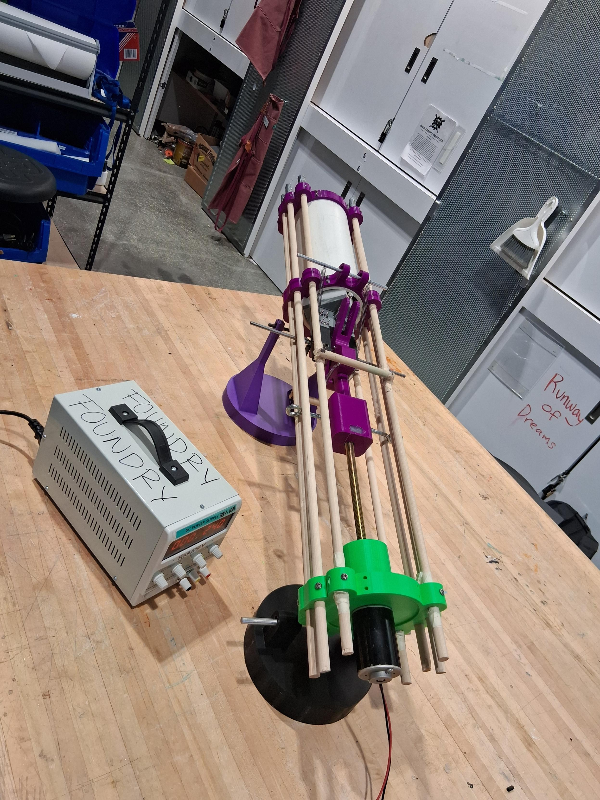

My engineering work focuses on human-centered mechanical design, prototyping, and iterative testing. I am particularly interested in mechanical systems that balance functionality, safety, and accessibility under real-world constraints.
Through course-based and team-based projects, I have applied the engineering design process from early problem definition through fabrication and validation. My work emphasizes structured decision-making, tolerance-aware design, and continuous refinement based on testing and feedback.

I designed and prototyped an electronically operated, adaptive ball launcher intended to enable independent play for children with motor impairments. Working in a multidisciplinary team, I translated user needs into quantitative design criteria and iterated through multiple prototype generations to improve safety, reliability, and ease of use.
The final prototype integrated a spring-actuated linear drive system with low-force electronic activation using an Arduino-based control circuit. The system was validated through repeated functional testing and qualitative feedback from caregivers and occupational therapists.
View Project Poster